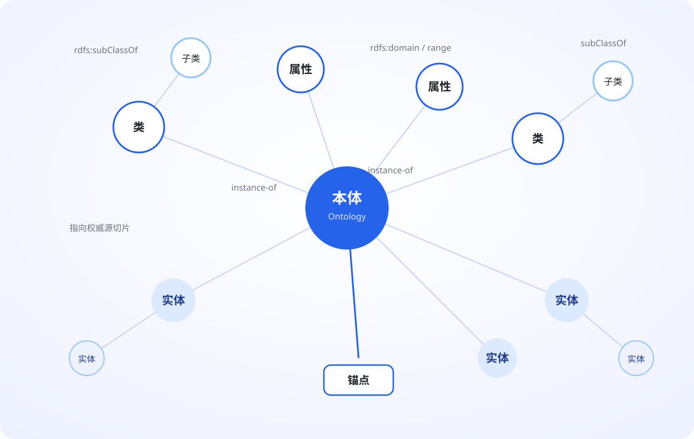
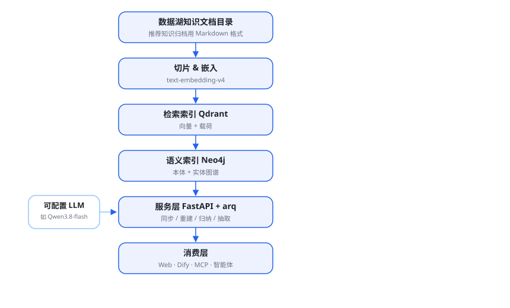
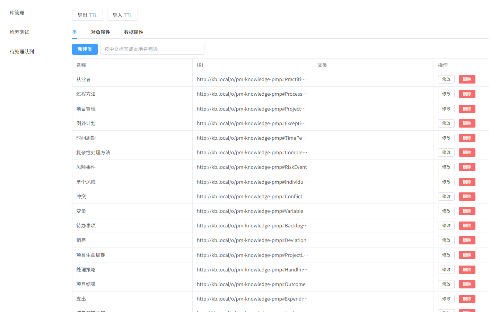
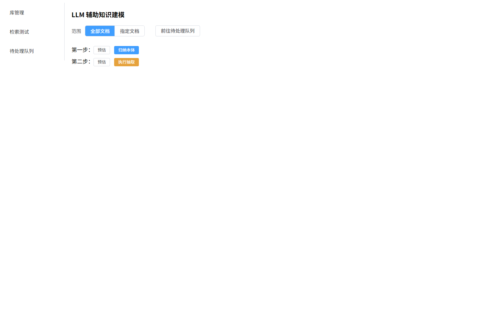
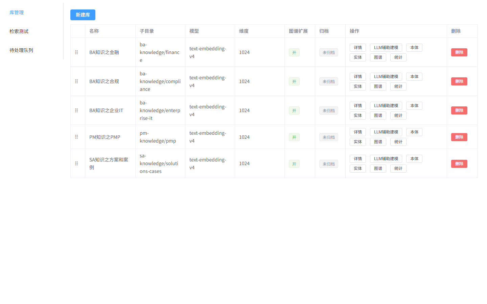
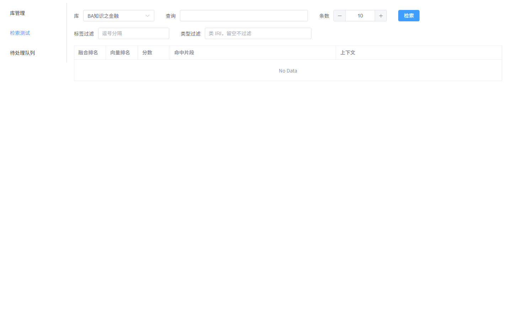
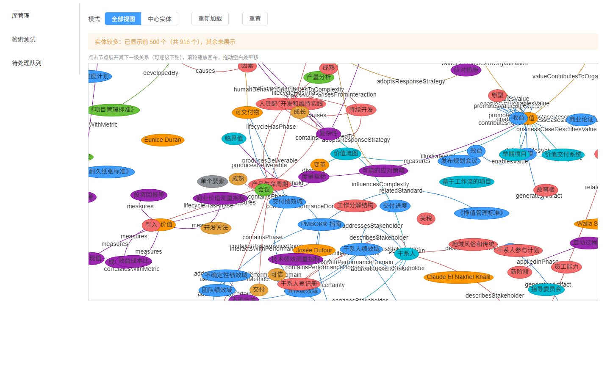
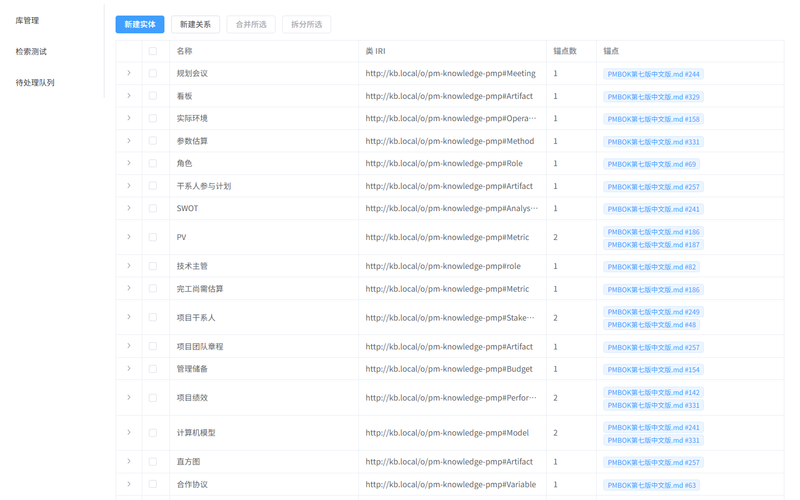

企业内知识从管理到普通应用再到AI智能体应用，相较于传统知识库存在普遍性语义层缺失的问题，导致同样语义下的知识表达不一致所产生的知识无法有效利用的问题，而 Ontology（本体）+ LLM（大模型）应用 + 传统知识管理（包括图谱、向量化等）这样的技术组合，能够解决这一问题。
小范围起步 · Docker 部署 | 检索 / 本体 / 实体图谱 / LLM 辅助建模

查「结算周期」找不到写「对账频率」的文档；查人带不出他负责的项目。
知识归档大多只是文件，没有「库—文档—切片」可追溯结构，也没有AI可编程的统一入口。
传统依托知识拷贝做为底层机制的传统知识管理，在文件被改、被删、被移动后，很难保障知识一致性，及时性，从而导致检索知识过期问题。
提供统一可编程入口，及AI智能体可授权访问入口——一套契约对外，零导入实时消费。
可更好的统一企业内部语义，使知识检索幻觉降低，检索结果更加有效。
LLM 归纳候选本体、人工确认，大幅降低本体构建代价。
对原始知识采用索引方式而非拷贝方式，保障知识检索结果可溯源，以及知识更新一致性。

FastAPI + arq 任务队列（Redis）；同步/重建/归纳/抽取均为幂等任务，同库同类单飞。
Web 界面 · Dify 外部知识库契约 · MCP 工具 · 自研 HTTP 调用，共用同一检索编排。
可配置LLM（如Qwen3.8-flash）归纳与抽取；OWL 2 RL 校验 + TTL 导入导出。
组件容器化部署、小范围起步。
采样切片 → LLM 归纳类/对象属性/数据属性（中文标签、定义、domain/range 引用）→ 本体提案 → 确认后入注册表并导出 TTL。
签名只取标签命中切片的类；实体名必须逐字在正文、IRI 必须在本体签名内 → 提案 → 确认后成为实体与关系，参与检索扩展。
生成期结构校验（属性引用缺失类不进入队列）+ 确认期冲突提示（重复自动关闭、缺失标签列出可选并跳转定位）—— 机器产出、人工拍板。


内容哈希门槛；删除文档自动清索引、锚定实体转待处理。
重试不重复建记录/提案；同库同类任务同一时刻只跑一个。
已成功切片永久跳过，重跑只补失败与缺失，不重复计费。
部分失败任务标记 partial，失败清单进队列，从不静默丢弃。
删除两个索引卷即可从权威源 + TTL 全量重建；重建前预估与二次确认。
端口走SSL、单一 Bearer 令牌、密钥不进日志与导出。
单次调用 2~2.5 万 token，超时失败的服务端计费难控，两天烧掉约 200 元。
单次约 1.1K token、十余秒；千片级抽取总费用数元级，失败切片只补差额。
教训：模型的「默认聪明」是计费的——机械 JSON 任务不需要思考链；签名只送与切片相关的要素；超时失败也要当作成本来管。
盘点 Markdown 知识资产，划定语料库目录（一个库 = 一个子目录）。
先在单机/开发环境用 Docker Compose 起栈（Qdrant/Neo4j/Redis/API/Worker/Web），配置密钥与端口，验证检索与建模闭环。
新建语料库 → 全量同步入索引；此后增量同步/定时轮询自动跟进变更。
LLM 归纳本体 → 确认 → 抽取实体与关系 → 确认；重复迭代直至覆盖满意。
Web 检索验证 → Dify 契约 / MCP / 外部智能体挂接（不导入、实时访问、显式降级）。
以语料库为单位扩容：逐域同步与建模，观察成本与质量后扩大并发与范围，再把 API 开放给更多消费方。


| 指标 | 数值 |
|---|---|
| 语料库 / 本体要素 | 5 个库 · 309 类 · 322 对象属性 · 306 数据属性 |
| 实体 / 关系 | 1077 个实体 · 252 条已确认关系 |
| 自动化保障 | 101 个测试 + V1–V11 验收记录，全量回归护航 |
| 建模成本 | qwen3.8-flash：单次约 1.1K token，千片级抽取数元级 |
| 被引用方 | 火花会（Sparkwave）以「外部知识库组合检索」挂接本库检索 API |


让每一次检索都听得懂概念、回得到原文、对得起智能体。
全部实现、设计文档与验收记录均已开源：
https://github.com/leo21cn/my-local-ontology-knowledge-lib.git
FastAPI · Qdrant · Neo4j · arq · Vue 3 | MIT 风格工程实践 · 单仓可部署